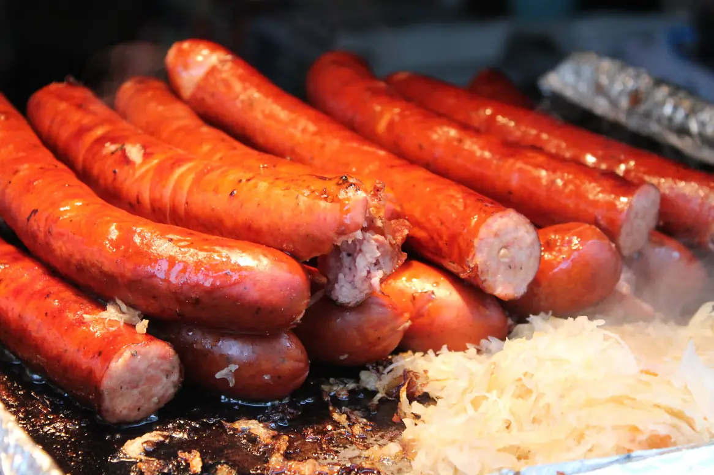
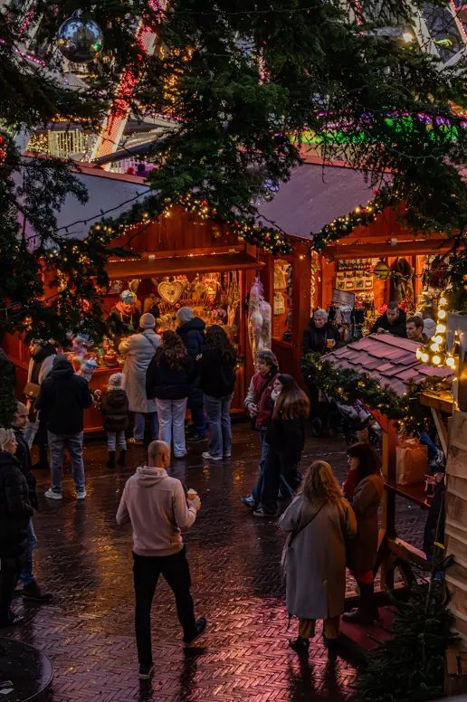

Every Wednesday · 6 PM
Stammtisch
The regulars' table, open to everyone. $6 half liters of Helles all night, a German conversation corner for learners, and a reserved sign with your name if you come three weeks in a row.
Our covered garden seats 140 at long communal tables. Dogs, kids and big groups welcome. Here's what's on every week, and what's coming this winter.

A timber roof plus shade sails over every table. Open rain or shine.
Twelve ceiling fans, misters in summer and patio heaters in January.
Water bowls at every table and a plain Hundewurst for $4.
Kids welcome until 9 PM, with a chalk wall and Kinderteller for $9.
Bratwurst over charcoal from 4 PM daily, 11 AM on weekends.
Long tables for 8 to 30. Reserve one and we'll put your name on it.
Every Wednesday · 6 PM
The regulars' table, open to everyone. $6 half liters of Helles all night, a German conversation corner for learners, and a reserved sign with your name if you come three weeks in a row.
Every Saturday · 6 to 9 PM
Franz Moser plays polkas, waltzes and the occasional pop song nobody expects. Expect at least one table standing on its bench by 8:30.
Sixteen days from September 19 to October 4, two oompah bands, one very determined stein-holding champion and a lot of very happy people. Thank you, St. Pete. We'll do it again next September.

For three weekends in December the garden turns into a little Bavarian Christmas market, with eighteen stalls from local makers, Glühwein, roasted almonds and Lebkuchen hearts. Free entry.
Saturdays 3 to 10 PM, Sundays noon to 8 PM. Glühwein $9, plus a $5 deposit on the souvenir mug. Kinderpunsch $5.
Reserve a garden table